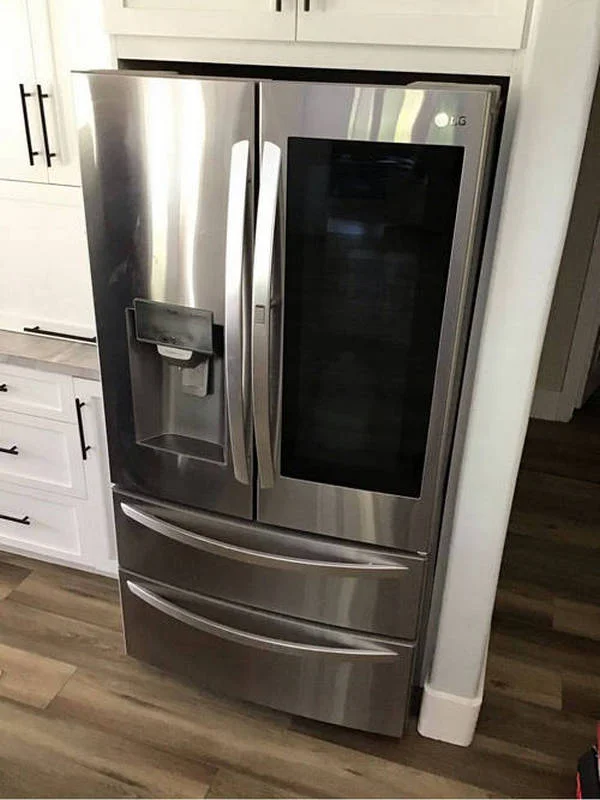

LG Inverter Refrigerator Stopped Cooling: Possible Inverter Compressor, Inverter Board, Control Module, or Refrigerant Leak
An LG inverter refrigerator that suddenly stops cooling is a problem that requires immediate attention. Unlike conventional refrigerators, inverter models continuously adjust compressor speed to maintain a stable temperature while reducing energy consumption. When cooling performance disappears completely or gradually declines, the cause is often more complex than a simple thermostat issue. Common sources of failure include the inverter compressor, inverter control board, main electronic control module, or a refrigerant leak somewhere within the sealed cooling system.
One of the first signs of trouble is food no longer staying cold even though the refrigerator still has power. The interior lights may work normally, the display may show the correct settings, and no warning messages may appear. In some cases, the compressor attempts to start repeatedly without producing sufficient cooling. In others, it may remain completely silent despite the refrigerator appearing to operate normally. These symptoms indicate that the cooling system is no longer functioning as designed and requires professional diagnosis.
The inverter compressor is the heart of an LG inverter refrigerator. Unlike traditional compressors that repeatedly turn on and off, an inverter compressor changes its operating speed according to cooling demand. This allows the refrigerator to maintain a more stable temperature while consuming less electricity and producing less noise. Although inverter compressors are known for their reliability, they can still fail because of electrical damage, internal mechanical wear, overheating, or long-term operating stress.

When the inverter compressor begins to fail, cooling performance usually declines gradually. The refrigerator may take much longer to reach the selected temperature, fresh food may spoil sooner than expected, and frozen products may begin to soften. Eventually, both the refrigerator and freezer compartments lose their ability to maintain proper temperatures. In some situations, the compressor may emit unusual clicking or humming sounds as it unsuccessfully attempts to start.
Another common cause is a defective inverter control board. This electronic board supplies the compressor with precisely controlled electrical signals that regulate its speed. If the inverter board fails, the compressor may not receive the correct voltage or operating commands. As a result, the compressor may not start at all, may stop unexpectedly, or may run at an incorrect speed that cannot provide adequate cooling. Electrical surges, moisture, aging components, or manufacturing defects can all contribute to inverter board failure.
The main electronic control module can also prevent an LG inverter refrigerator from cooling properly. This board coordinates communication between temperature sensors, fans, the compressor, the defrost system, and other electronic components. If the control module develops damaged circuits or software-related faults, it may stop sending proper commands to the inverter board. Even though the display continues functioning and interior lighting remains normal, the refrigerator may lose all cooling capability because critical components are no longer being controlled correctly.
A refrigerant leak is another serious possibility. Refrigerant circulates through the sealed cooling system, absorbing heat from inside the refrigerator and releasing it through the condenser. If a leak develops in the evaporator, condenser, connecting tubing, or factory joints, the system gradually loses refrigerant. The compressor may continue running almost continuously in an attempt to maintain temperature, but with insufficient refrigerant, cooling performance steadily decreases. Eventually, neither compartment reaches the desired temperature despite the compressor operating almost constantly.
One important characteristic of refrigerant leaks is that the problem usually develops gradually rather than suddenly. Homeowners often notice that food does not stay as cold as before, ice cream becomes softer, or the refrigerator runs much longer than usual. Because refrigerant operates inside a sealed system, simply adding more refrigerant without locating and repairing the leak will not provide a permanent solution. The leak must first be identified, repaired, pressure-tested, and only then can the system be evacuated and recharged with the correct amount of refrigerant.
Several warning signs may indicate that an LG inverter refrigerator requires professional service. These include both compartments becoming warm, continuous compressor operation without adequate cooling, repeated clicking sounds during compressor startup, unusual humming noises, temperature fluctuations, error codes on the display, or excessive electricity consumption caused by the compressor running almost constantly.
In some situations, the refrigerator may appear completely normal except for the lack of cooling. The display responds to button presses, interior lighting functions correctly, and fans may continue operating. Because inverter refrigerators rely heavily on sophisticated electronic controls, appearances can be misleading. A failed inverter board or control module may not produce any visible signs of damage while still preventing the compressor from operating properly.
Homeowners should avoid attempting repairs involving inverter systems without proper equipment and training. Diagnosing an inverter compressor requires specialized measuring instruments capable of testing voltage, resistance, and communication between electronic components. Refrigerant-related repairs require certified equipment for leak detection, pressure testing, vacuum evacuation, and refrigerant charging. Improper repairs may damage expensive components or create additional failures that significantly increase repair costs.
Preventive maintenance can help extend the lifespan of an LG inverter refrigerator. Cleaning condenser coils regularly improves heat dissipation and reduces compressor workload. Ensuring adequate ventilation around the appliance allows heat to escape efficiently. Inspecting the door gaskets helps prevent warm air from entering the refrigerator, reducing unnecessary compressor operation. Using a surge protector may also reduce the risk of electrical damage to sensitive inverter electronics during power fluctuations.
Ignoring cooling problems can lead to more expensive repairs over time. A compressor forced to operate continuously because of a refrigerant leak or faulty electronics experiences greater mechanical stress. Likewise, an inverter board operating under abnormal electrical conditions may eventually damage additional components. Addressing the issue early often limits the repair to a single failed part rather than requiring replacement of multiple expensive assemblies.
If your LG inverter refrigerator has stopped cooling, prompt professional diagnosis is the most effective way to restore reliable operation. Experienced appliance repair technicians can accurately test the inverter compressor, inverter control board, electronic control module, and sealed refrigeration system to identify the exact cause of the failure. After replacing defective components or repairing refrigerant leaks with high-quality parts and proper service procedures, your refrigerator can return to efficient, dependable cooling while helping prevent future breakdowns.